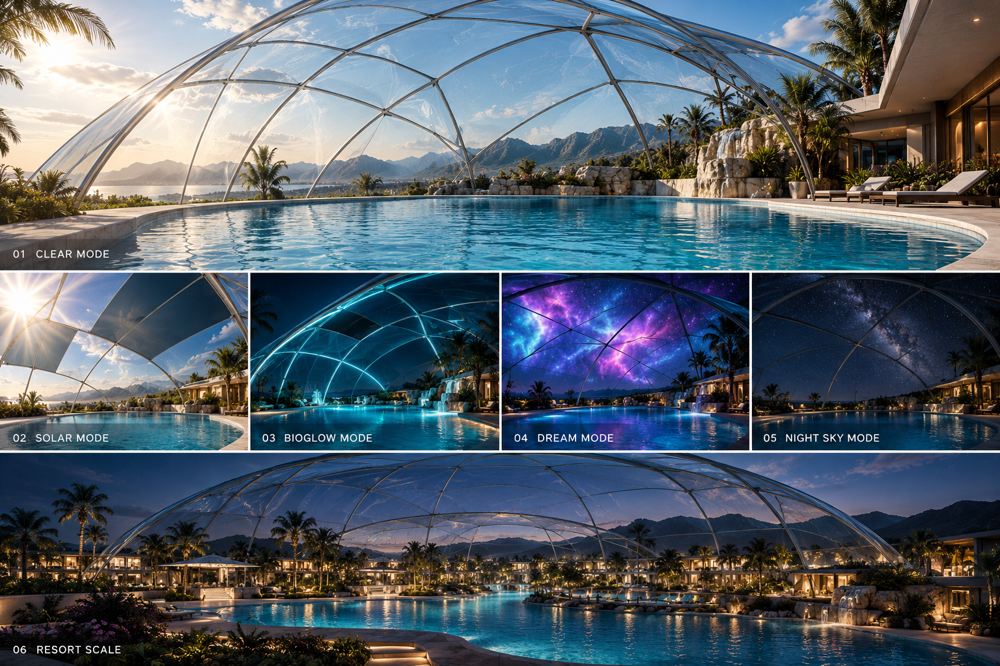

Adaptive Transparency
Localized control of sunlight and visual openness.
What if architecture did not simply separate us from the environment — but learned how to negotiate with it?
Imagine a swimming environment beneath an enormous transparent shell. Not a traditional greenhouse. Not simply a pool enclosure. A structure capable of responding to sunlight, air, water, light, imagery, weather, and human presence.
The Living Dome begins with one architectural question: what happens when the surface surrounding us becomes programmable?
The dome would not need to follow a perfect hemisphere. Its geometry could stretch, tilt, rise, and descend around the landscape.
One side might disappear into vegetation while another rises dramatically above the pool. The structure becomes a transparent landscape rather than an object placed on top of one.

Instead of closing blinds or covering the environment, portions of the shell could conceptually react to solar intensity.
Imagine a region of reduced transmission moving slowly across the dome as the sun travels overhead. The rest of the enclosure remains clear.
From inside, the experience could feel almost impossible: shade without visually losing the sky.

Most architecture controls nature by
separating us from it.
What if architecture could
negotiate with it instead?
The enclosure does not necessarily need to remain sealed. Openings near the lower perimeter and high points of the shell could create controlled natural airflow.
Warm air rises. Cooler air enters below. Under the right conditions, the enclosure behaves more like an open pavilion. During difficult weather, it becomes protective again.
The architecture shifts between open air and controlled environment depending on what the moment requires.

At sunset, the architecture changes character.
BIOGLOW™-inspired illumination could conceptually move through structural ribs, transparent surfaces, water edges, pathways, and architectural transitions.
Instead of simply illuminating the building, the light becomes part of its geometry.
Reflections duplicate those patterns across the water. The structure begins to resemble a luminous organism.

The transparent shell becomes a new kind of canvas.
Stars. Clouds. Aurora. Artificial sunsets. Generative art. Scientific visualization. Abstract worlds.
You could float in real water beneath a digital atmosphere.
And when the projection disappears, the real sky returns.

Waterfalls and controlled mist introduce another layer.
Fine mist can become part of the visual environment. Light can appear suspended between the water and the dome.
The experience begins to develop three visual layers: the water below, luminous atmosphere around the body, and a digital sky overhead.

The dome does not have to contain a single rectangular pool.
Waterfalls, shallow platforms, submerged lounges, swimming zones, thermal areas, gardens, fire features, and architecture can all occupy the same environment.
The dome becomes the atmospheric boundary around an entire landscape.

Now imagine the environment sensing itself.
Sunlight. Temperature. Humidity. UV. Wind. Air quality. Water temperature. Occupancy.
Instead of requiring someone to operate every feature manually, an environmental intelligence layer could coordinate the experience.
The concept becomes interesting when the individual technologies stop behaving like separate gadgets and begin acting as one environment.
Localized control of sunlight and visual openness.
Controlled low and high openings allow the dome to breathe.
Architectural illumination integrated into the structural language.
The enclosure becomes an immersive digital atmosphere.
Mist and water introduce luminous layers within the occupied space.
Temperature, movement, filtration, waterfalls, and lighting become coordinated.
Water traveling over the shell could conceptually be collected and reused within the surrounding landscape.
Selected solar-facing surfaces could potentially participate in energy collection without sacrificing transparency everywhere.
Sensors and automation coordinate environmental states instead of controlling every component separately.

Maximum transparency.

Adaptive response to sunlight.

Structural illumination.

Artificial sky and immersive imagery.

Technology disappears. The real universe returns.
Rain striking the shell does not necessarily need to become runoff.
Water could follow integrated channels along structural ribs toward collection zones. It could then conceptually participate in irrigation, landscape systems, decorative water features, or other reuse strategies.
The enclosure stops thinking of weather as something to block. Weather becomes input.

Sunlight becomes intense.
The architecture responds.
Wind changes.
The architecture responds.
Night arrives.
The architecture becomes something else.
This future concept film will show the dome transitioning from daylight transparency into solar response, BIOGLOW™, mist projection, artificial skies, and finally complete transparency beneath the real stars.
Water below. Light around you. A programmable atmosphere overhead. Sunlight when desired. Shade when needed. Air moving through the architecture. Rain becoming a resource. BIOGLOW™ after sunset. Digital worlds appearing across the sky. And when the technology disappears, the real stars remain.